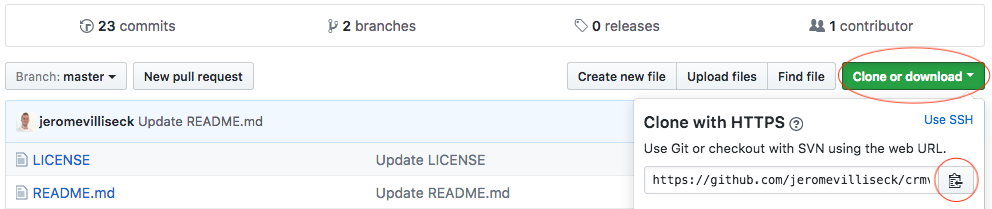

git [nom de l'option]git clone [projet]cd [projet]git statusgit addgit statusgit commit -m "nom du commit"git push -u origin mastermkdir [nom_dossier] -> créer son dossier localcd [nom_dossier] -> se placer dans le dossier créegit init -> intialiser le projet, le transformer en repository (dépôt)git commit -m "[message pour initialiser son commit]" -> réaliser un commit, on obtient ainsi un backupgit add . -> ajouter tous les fichiers à son index (avec le .), sinon changer le . par les fichiers de votre choixgit log -> affiche la liste de tous les commits réalisés. Il sont rangés par ordre chronologique descendant. un commit contient: un SHA (identifiant unique), un auteur, une date, une description (celle que vous avez indiqué)rien a valider, la copie de travail est propre -> message signifiant que les fichiers suivis n'ont pas été modifiés depuis le dernier commit.git status ou gst
git checkout [SHA_du_commit] -> se repositionner sur un commit spécifique (remonter dans le temps)git checkout master -> revenir à la branche principale (= le commit le plus récent)git reset --hard [SHA_du_commit] -> annuler tous les changements non encore commités. Cela dit : reviens a ce commit la avec l'état des fichiers de ce commit la et annule tous les commit qui ont été fait aprèsgit reset --soft [SHA_du_commit] -> on dit a git : reviens a ce commit la, mais n'anule pas toutes les modifications que j'ai fait jusque làgit commit --amend --no-edit -> enregistre mes modifcations a mon commit actuel dans lequel je suis placé, mais sanc créer un nouveau commitgitHub est le service en ligne. Créer un compte et suivre les instructions. Ne pas confondre git le logiciel de versionning à installer sur sa machine de GitHub le service un ligne ou on peut gérer des dépots distants.
Aller sur GitHub, se placer sur le projet, puis copier la web url
git clone [web_url] -> copie en local le projet sur la machinegit init -> le transforme en dépôt sur la machine existantegit clone -> le projet est récupérégit initinit comme Repository localgit remote add origin [web_url_du_projet] -> On dis a son repository qu'on lui ajoute le nom du remote du serveur Github en ligne avec le lien du projetgit push -u origin master -> crée un backup distant sur le repository distantFaire un push à chaque fois qu'on veut crée un backup distant. Dans le projet GitHub clquer sur les liens commit pour voir les différents commit.
Rappel : un remote est une machine qui heberge. Origin = le dépôt GitHub en ligne, le serveur.
git pull origin master -> on "pull", on tire les données du Repository distant vers son dossier localgit branch -> retourne les branches présentes, et ajoute une étoile sur la branche dans laquelle on est placégit branch [nouvelle_branche] -> créer une nouvelle branchegit checkout [nom_de_branche] -> se positionner dans la branche nouvellement créeMise à jour des branches et fusion avec la branche master
git checkout master -> se placer dans la branche principalegit merge [nom_deLa_branche_declinee] -> fusionner la branche avec la branche principaleSavoir qui a fait une modification
git blame [nomFichierExtensionIncluse] -> liste toutes les modifications effectuées sur un fichier ligne par lignegit show [debut_du_SHA] -> renvoie directement les détails du commit recherchétouch .gitignore -> crée un fichier de configurationgit add -Agit stash -> met de coté les modifications en coursgit stash pop -> récuperer les modifications qui avaient été mis de coté et retravaillercd [dossier_du_projet] > git init
git add . > git commit -m "nomCommit"
git remote add origin [lien_http_projet]
git push -u origin master
Sur un nouveau dossier -> d'abord se positionner dans le dossier -> initialiser avec git init -> ajouter le remote [lien_http_projet] -> puis faire un pull
ou
Sur un nouveau dossier -> d'abord se positionner dans le dossier -> initialiser avec git init -> git clone [lien_http_projet]
git pull origin master
git remote rm origin > git remote rm upstream
rm -rf .git
git remote show origin